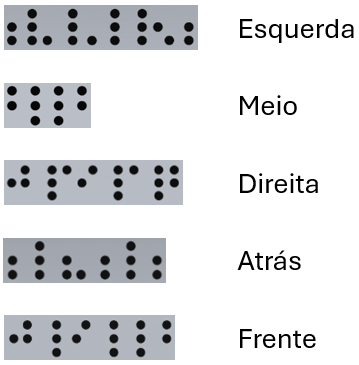

Olá! Meu nome é Irineu Thiago de Oliveira Rangel e atuo como projetista,
com grande interesse por tecnologia e inclusão.
Defendo que o design deve sempre priorizar o ser humano, levando em
conta suas diferentes necessidades e limitações.
O objetivo deste projeto é desenvolver uma interface acessível para
fogões, buscando garantir segurança, promover autonomia e facilitar a
usabilidade para todos os tipos de usuários.
A proposta é criar soluções que atendam a uma ampla variedade de perfis,
tornando o ambiente doméstico mais seguro e funcional para todos.
Legenda:

Conceito:
A interface foi criada priorizando acessibilidade e segurança. Os botões
apresentam tamanho ampliado e alto contraste de cores, facilitando o uso
por pessoas com baixa visão ou daltonismo. Cada botão conta com
marcações em Braille e relevo para identificação tátil. Além disso, há
feedback sonoro para cada ação, apoiando usuários com deficiência
visual.
Necessidades atendidas:
Para cadeirantes, a interface está posicionada de forma frontal e em
altura reduzida, facilitando o acesso. Pessoas com deficiência visual
contam com recursos em Braille, elementos em relevo e sinais sonoros
para navegação. O daltonismo é considerado através do uso de cores
seguras, garantindo a distinção visual adequada. Para indivíduos com
nanismo ou gigantismo, os botões são projetados com dimensões amplas e
espaçamento suficiente, promovendo conforto e acessibilidade para
todos.
Princípios aplicados:
Foram adotadas práticas para simplificar a usabilidade, facilitar a
acessibilidade tanto visual quanto tátil, e aumentar a segurança por
meio de indicadores luminosos e sonoros. Essas medidas visam
proporcionar uma experiência mais intuitiva, inclusiva e protegida para
todos os usuários.
Elementos estratégicos:
Para garantir uma
experiência intuitiva e eficiente, recomenda-se a utilização de cores
contrastantes, além de formas geométricas específicas para cada função,
facilitando a identificação visual. A inclusão de sons de confirmação
contribui para o feedback imediato ao usuário, enquanto texturas
distintas nos botões aumentam a percepção tátil e reforçam a
diferenciação das funções.
Botões: